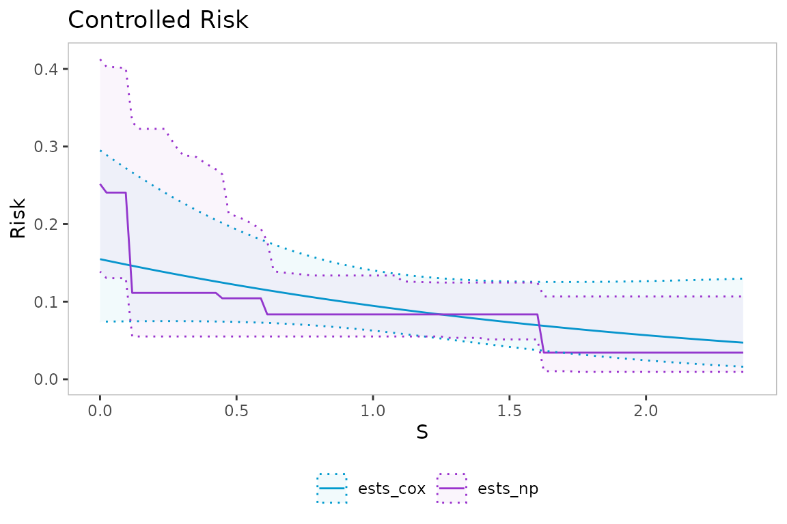
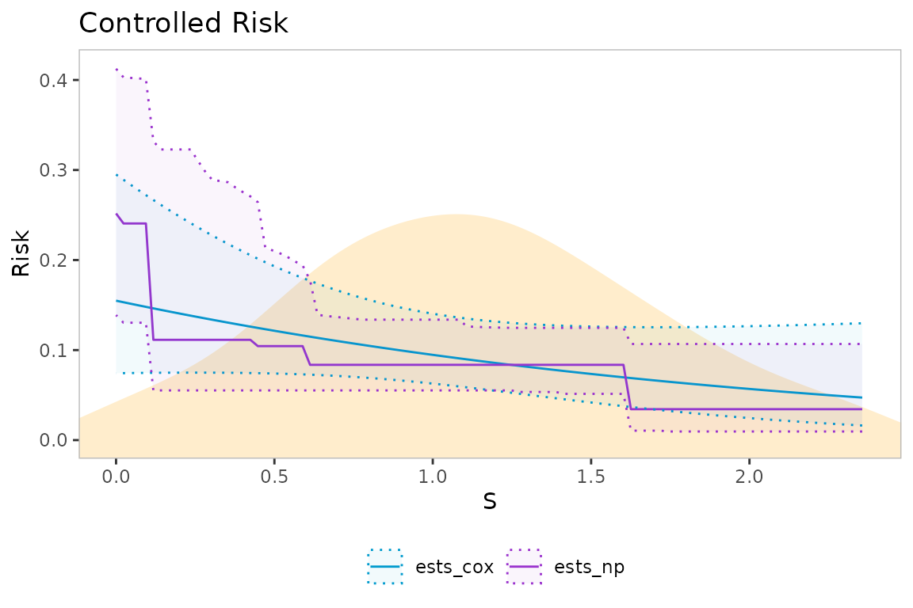
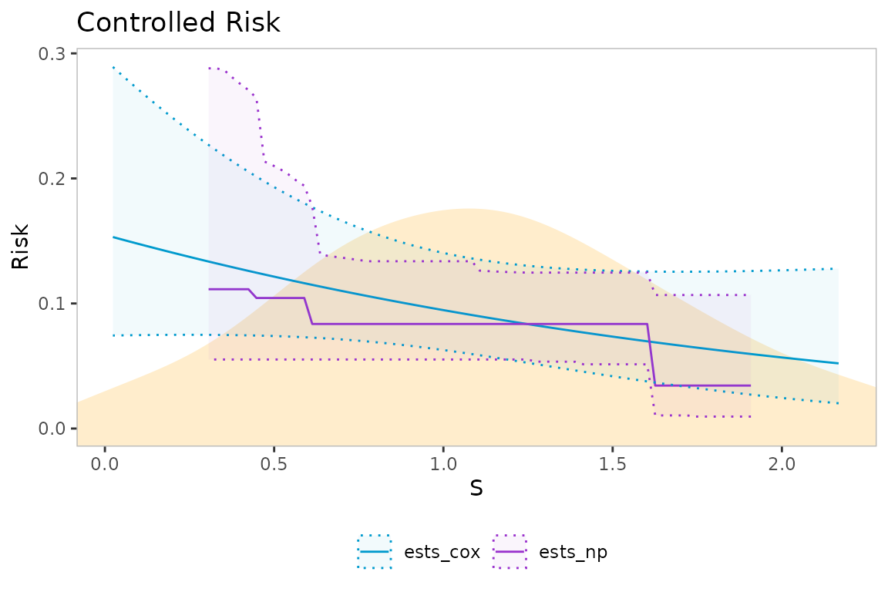
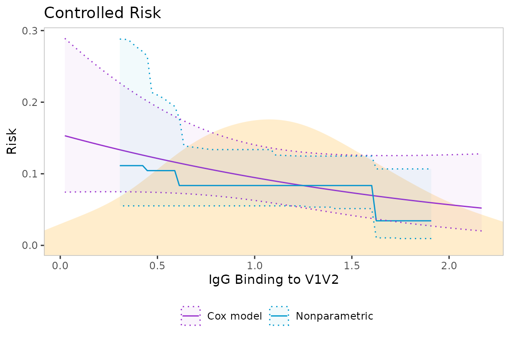

The load_data function takes in raw data and creates a
data object that can be accepted by various estimation functions. We use
publicly-avaliable data from the HVTN 505 HIV vaccine efficacy trial as
our example.
data(hvtn505)
dat <- load_data(
time = "HIVwk28preunblfu",
event = "HIVwk28preunbl",
vacc = "trt",
marker = "IgG_V2",
covariates = c("age","BMI","bhvrisk"),
weights = "wt",
ph2 = "casecontrol",
data = hvtn505
)The summary_stats function gives us some useful
summaries of the dataset.
summary_stats(dat)
#> Number of subjects (vaccine group, phase-1): 1161
#> Number of subjects (placebo group, phase-1): 1141
#> Number of subjects (vaccine group, phase-2): 150
#> Number of subjects (placebo group, phase-2): 39
#> Number of events (vaccine group, phase-1): 27
#> Number of events (placebo group, phase-1): 21
#> Number of events (vaccine group, phase-2): 25
#> Number of events (placebo group, phase-2): 19
#> Proportion of subjects with an event (vaccine group, phase- 1): 0.02326
#> Proportion of subjects with an event (placebo group, phase- 1): 0.0184
#> Proportion of subjects with an event (vaccine group, phase- 2): 0.16667
#> Proportion of subjects with an event (placebo group, phase- 2): 0.48718The est_overall function allows us to estimate overall
risk in the placebo and vaccine groups, as well as estimate vaccine
efficacy, using either a nonparametric Kaplan-Meier estimator or a
marginalized Cox model.
est_overall(dat=dat, t_0=578, method="KM")
#> stat group est se ci_lower ci_upper
#> 1 risk vaccine 0.04067009 0.008230842 0.02506853 0.05602199
#> 2 risk placebo 0.02879861 0.006563785 0.01622360 0.04121288
#> 3 ve both -0.41222411 0.430451788 -1.56659984 0.22294979
est_overall(dat=dat, t_0=578, method="Cox")
#> stat group est se ci_lower ci_upper
#> 1 risk vaccine 0.04177642 0.008111679 0.02847302 0.06090588
#> 2 risk placebo 0.02938706 0.006486545 0.01901930 0.04514638
#> 3 ve both -0.42159246 0.417915188 -1.52937491 0.20101796The est_ce function allows us to compute controlled
effects curves; see Gilbert, Fong, Kenny,
and Carone 2022 for more detail.
ests_cox <- est_ce(dat=dat, type="Cox", t_0=578)
ests_np <- est_ce(dat=dat, type="NP", t_0=578)
#> Loading required package: nnls
#> Loading required package: gam
#> Loading required package: splines
#> Loading required package: foreach
#> Loaded gam 1.22-5
#> Super Learner
#> Version: 2.0-29
#> Package created on 2024-02-06
#> Loading required namespace: rangerThe plot_ce function produces basic plots of CR or CVE
curves.
plot_ce(ests_cox, ests_np)
Use the density option to add a kernel density estimate
of the distribution of the marker to the plot background.
plot_ce(ests_cox, ests_np, density_type="kde", dat=dat)
Use the trim function to truncate the display of the
curves, based on quantiles of the marker distribution. It is recommended
to truncate the display of the nonparametric curves, as estimates can be
biased towards the endpoints of the marker distribution.
ests_cox <- trim(ests_cox, dat=dat, quantiles=c(0.05,0.95))
ests_np <- trim(ests_np, dat=dat, quantiles=c(0.1,0.9))
plot_ce(ests_cox, ests_np, density_type="kde", dat=dat)
Plots generated using plot_ce can be further customized
using ggplot2 functions. For example, we change the plot
labels and colors as follows.
library(ggplot2)
my_plot <- plot_ce(ests_cox, ests_np, density_type="kde", dat=dat)
my_plot +
labs(x="IgG Binding to V1V2") +
scale_color_manual(labels = c("Cox model", "Nonparametric"),
values = c("darkorchid3", "deepskyblue3")) +
scale_fill_manual(labels = c("Cox model", "Nonparametric"),
values = c("darkorchid3", "deepskyblue3"))
#> Scale for colour is already present.
#> Adding another scale for colour, which will replace the existing scale.
#> Scale for fill is already present.
#> Adding another scale for fill, which will replace the existing scale.
To view estimates in tabular format, use the as_table
function.
ests_table <- as_table(ests_cox, ests_np)
head(ests_table)
#> x y ci_lower ci_upper curve
#> 1 0.02356062 0.1531213 0.07439247 0.2891413 NA
#> 2 0.04712124 0.1513980 0.07449740 0.2833745 NA
#> 3 0.07068186 0.1496917 0.07459291 0.2777089 NA
#> 4 0.09424248 0.1480023 0.07467853 0.2721456 NA
#> 5 0.11780310 0.1463297 0.07475377 0.2666853 NA
#> 6 0.14136372 0.1446737 0.07481808 0.2613289 NA